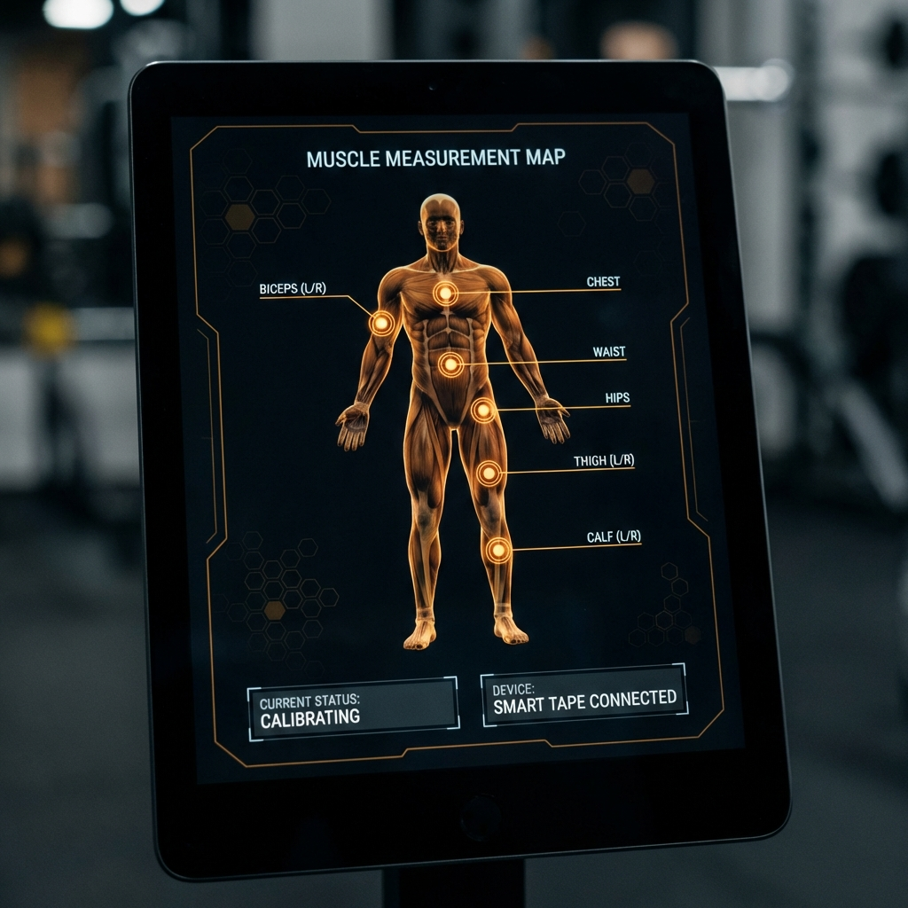

Hypertrophy Tracker: Premium Body Analytics
Presentación oficial del proyecto para redes sociales y portafolios profesionales.
1. Dashboard Dinámico y Heatmap

Visualización HUD con mapa de calor de progresión muscular.
2. Guía Anatómica de Medición

Mapa interactivo para estandarizar el registro de medidas corporales.
3. Comparación Evolutiva

Módulo de análisis fotográfico sincronizado en la nube.
🛠️ Stack Tecnológico Premium
- Frontend: React 19 + TypeScript + Framer Motion.
- Backend: Supabase Cloud Storage & Auth.
- Ciencia: Algoritmos de Casey Butt para análisis óseo.
- UX: Mobile-First PWA (Progressive Web App).
💡 Copy para Redes Sociales
"¿Cansado de trackers básicos? He construido Hypertrophy Tracker, una herramienta HUD premium para llevar mi
progreso físico al siguiente nivel. Con heatmap de crecimiento muscular, análisis de potencial genético y
sincronización en la nube. 🚀💪 #FitnessTech #BuildInPublic #HypertrophyTracker"